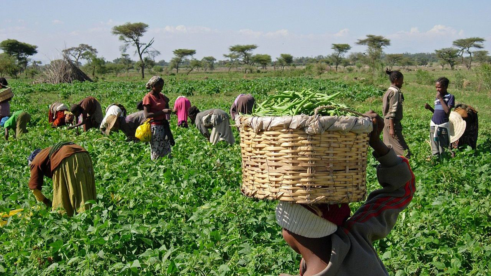
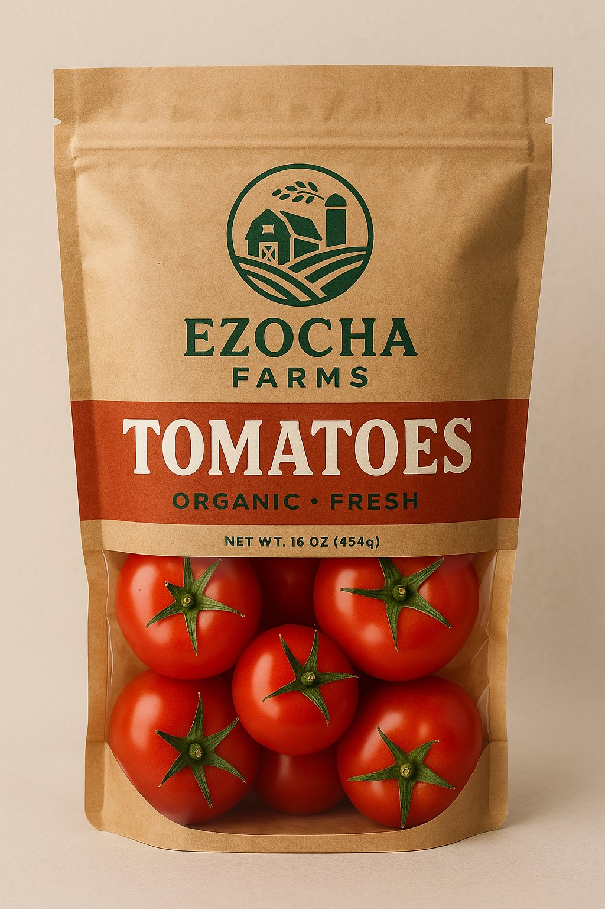
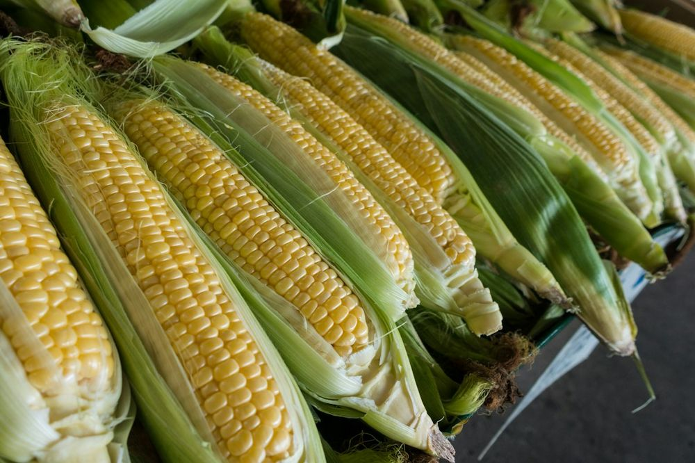
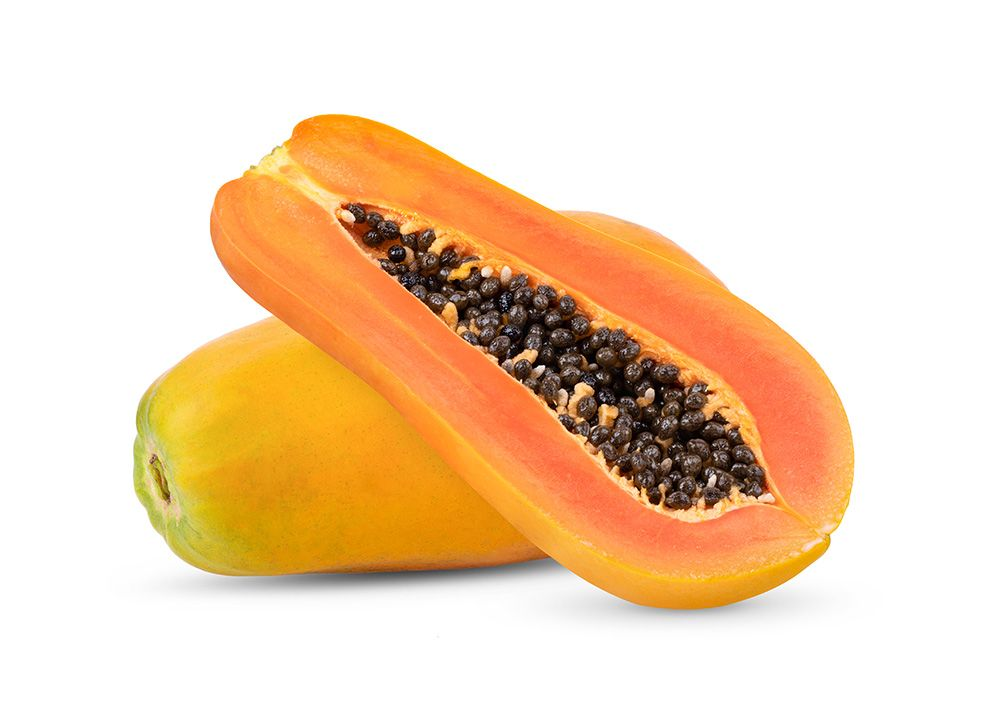
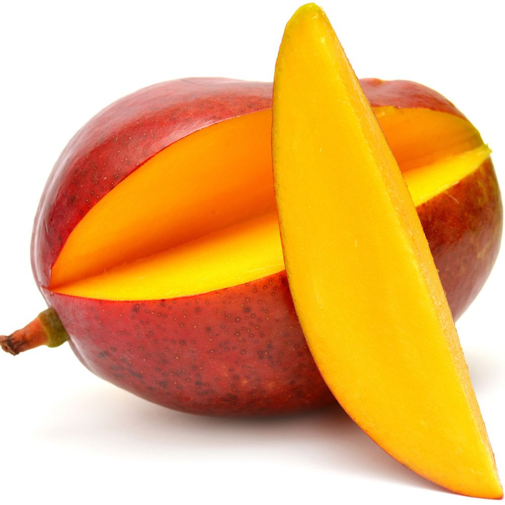
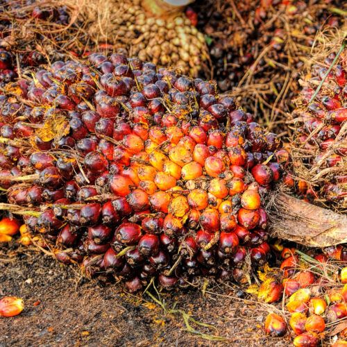
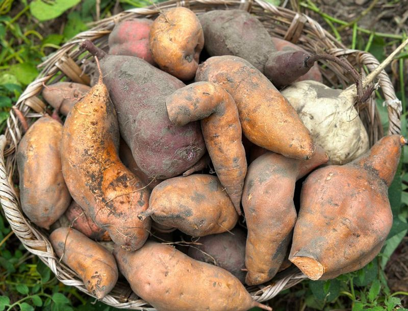
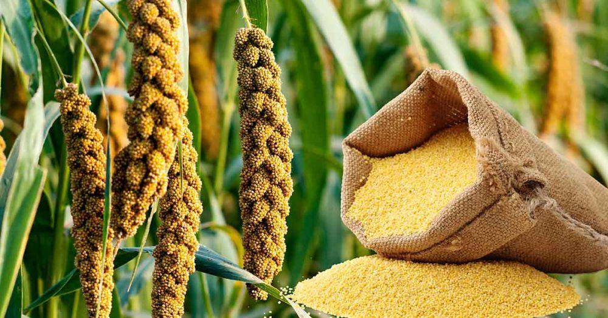
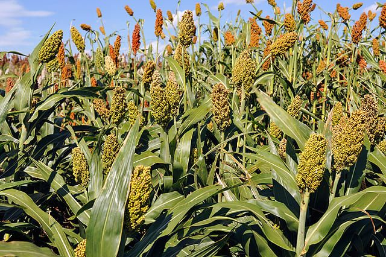
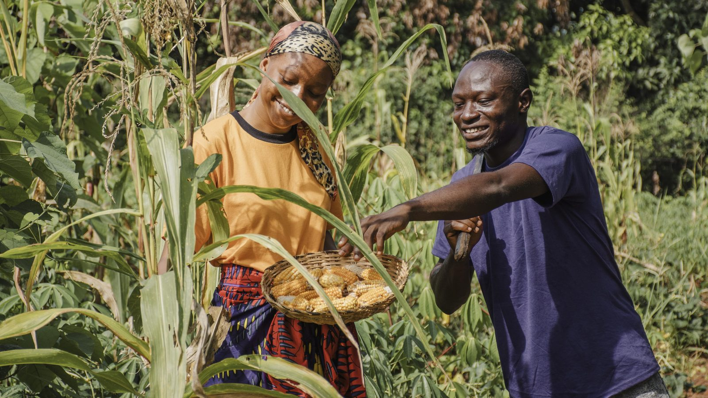

Our Vision
To be a leading agribusiness service provider, empowering sustainable farming practices and improving the lives of farmers, communities and consumers — while increasing youth participation in the business of agriculture.
🌱 Agribusiness One-Stop Service Provider
Ezocha Farm Services Ltd supports the establishment, operation and sustainable management of agricultural enterprises — making nutritious food available, accessible and affordable across Nigeria and Africa.
Who We Are
We support the establishment, operation and management of agricultural businesses — promoting investment across the value chain: research, agricultural tourism, mechanization, processing and packaging, warehousing and farmland leasing for food and job security.
We bridge the gap between farmers, research institutes, stakeholders, government agencies, international organizations, investors and local communities — in the quest for an improved and secure nutritional food system.
To be a leading agribusiness service provider, empowering sustainable farming practices and improving the lives of farmers, communities and consumers — while increasing youth participation in the business of agriculture.
To deliver innovative, sustainable and technology-driven services that enhance the productivity, profitability and well-being of farmers, while promoting environmental stewardship and a food-secure future.
Core Objectives
Access to innovative technologies, best practices and expert advice to enhance productivity and efficiency.
Services that help farmers increase income, reduce costs and improve overall profitability.
Sustainable practices that minimize environmental impact, conserve natural resources and promote ecosystem health.
Services that promote the health, safety and well-being of farmers, their families and their communities.
Collaboration with stakeholders so everyone has access to nutritious, sustainable and affordable food.
Our Services
From the first seed to the final sale — we walk with you at every stage. Tap a service to see more.

Farming for dual purpose — commercial food production and agricultural demonstration, showcasing modern and sustainable methods.
Our farms produce food for the market and serve as demonstration sites where modern, sustainable methods are showcased in practice.

Formal and informal training, workshops, consultancy and extension services tailored to individuals, cooperatives, institutions and organizations.
Workshops, consultancy and extension services for individuals, cooperatives, institutions and organizations — formal and informal, tailored to your needs.

Establishing and professionally managing crop farms, livestock farms and agroforestry projects for individuals, companies and institutions.
From land preparation to harvest, we handle the establishment and day-to-day management of crop, livestock and agroforestry projects.

Quality-certified seeds, seedlings, fertilizers, agrochemicals and improved technologies — because good output starts with guaranteed inputs.
Seeds, seedlings, fertilizers and agrochemicals — certified, scientifically and technologically improved, so your output is guaranteed.

We add value to produce — sweet potatoes, millet, sorghum and more — for premium prices and to manage post-harvest losses.
We process sweet potatoes, millet, sorghum and more into market-ready products — premium prices, fewer post-harvest losses.

We bring farmers, investors, processors, buyers and institutions together for profitable, sustainable relationships.
We connect you with buyers, processors, investors and institutions, building profitable relationships across the value chain.
What We Grow
The crops and produce at the heart of what we do — grown, harvested and processed with care.

Staple grain, grown and harvested at scale.

Fresh, nutrient-rich fruit.

Sweet, sun-ripened mangoes.

For palm oil and agro-processing.
Organic and fresh, packaged ready for market.

Processed and packaged for premium prices.

Hardy grain for food and processing.

Versatile grain, grown for food and feed.
Why Choose Ezocha?
We combine professional expertise with strong institutional partnerships and a genuine commitment to the people who grow our food.

What People Say
“Ezocha's research services transformed our crop yields!”
“Their farmland leasing program is seamless and profitable.”
“Ezocha's agribusiness events inspired our youth.”
Partners & Associates
Frequently Asked Questions
We lease farmland for food production and job security. Tell us the size and area you need, and we will match you with suitable land and a management plan.
Formal and informal training, workshops, consultancy and extension services — tailored to individuals, cooperatives, institutions and organizations.
Certified seeds, seedlings, fertilizers, agrochemicals and improved technologies — quality guaranteed, scientifically and technologically improved.
Sweet potatoes, millet, sorghum and more. We add value to produce so you earn premium prices and lose less to post-harvest waste.
Yes. We establish and professionally manage crop farms, livestock farms and agroforestry projects for individuals, companies and institutions.
Call 0803 500 4617, message us on WhatsApp, or send a message through the form below. Tell us what you need and we will take it from there.
Get in Touch
Whether you want to establish a farm, train your team, source quality inputs or find buyers for your produce — start the conversation today.